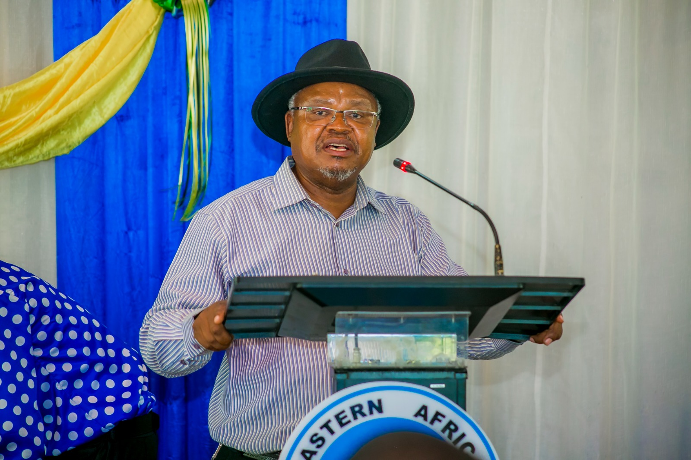
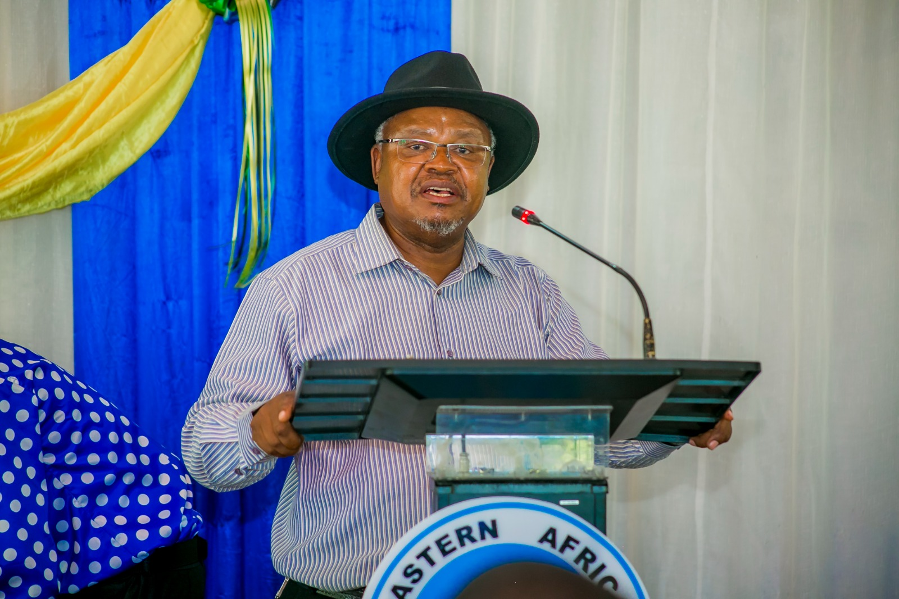

WECOME TO EASTERN AFRICA STATISTICAL TRAINING CENTRE (EASTC) SEVENTH (7th) CONVOCATIONAL EVENT
About the event
The Eastern afica statistical training centre convocational
event is the
pre
graduration
meeting
which occur every year before the graduration ceremony.As your aware,convocations within academic
institutions
are well established tradition.
It is academic cereminy that gathers academicians,students,alumni,public,and private sectors
stakeholders
and benefactors.it is the time for university comunity to catch up with alumni,welcome new
students,begin new
and continue establishment relationship with stake holders and benefactors of a university
it is the time to exchange views on topical insues within the sector we work in,teach research and
innovate.
©EASTC convocational Magazine
 

Main theme of the event
In our 7th convocaionalevent we have
selected the topic of
"The role of
official statistics and big data in
the
economic transformation and sustainable development of tanzania
" as the standing point to refrect the theme of these year's 18 of Novenber african statistics day.
The theme states that " Modenizing data ecosystem to acellerate the implimatation of African
continent Free
Trade Area (AICFTA) : The role of oficial statistics and big data in tne economic
transformation and sustainable development in Africa
"
African statistic day is cerebrated earch year on 18th of november . The commemoration aim among others to increase public awareness about the important role which statistics play in all aspects of social and economic development. This year's convocation aim to unerstand the African Continental free Trade Area(AfCFTA) and the potential role statistics and big data plays in discovering markets and serving customers across africa.
For more details click the link bellow to visit our home site